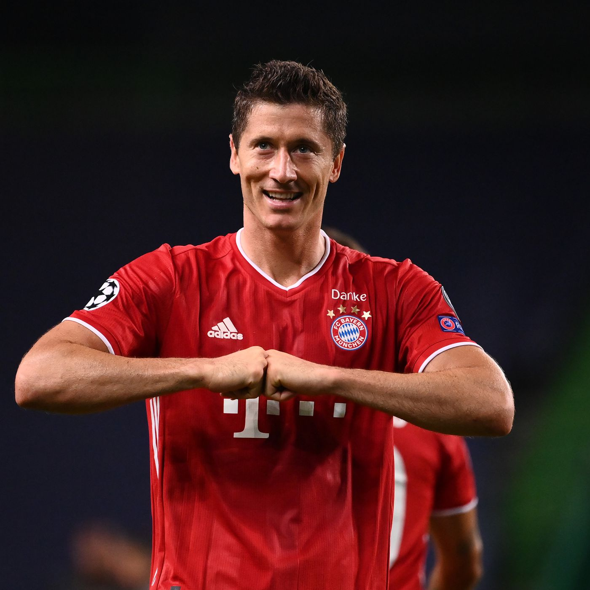

Robert Lewandowski
De los mejores despues de la era Cristiano Messi
Robert Lewandowsk; es un futbolista polaco que juega como delantero centro en el Bayern de Múnich de la Bundesliga de Alemania desde la temporada 2014-15. Es también internacional absoluto con la selección de Polonia desde 2008, de la cual es su capitán y máximo goleador histórico.
Directores Tecnicos Nominados al premio The Best.
Jürgen Klopp: Fue nombrado director técnico del Liverpool en 2015. Guió al club a dos sucesivas finales de la UEFA Champions League en 2018 y 2019, ganando esta última para asegurar su primer y - sexto del club- título en la competencia. El equipo de Klopp también terminó segundo en la Premier League 2018-19, registrando 97 puntos; el tercer total más alto en la historia de la Primera División inglesa, y la mayor cantidad por un equipo sin lograr ganar el título. En la siguiente temporada, Klopp ganó la Supercopa de Europa y la primera Copa Mundial de Clubes de la FIFA en Liverpool, y mantuvo una racha invicta de 44 partidos en la liga -la segunda más larga en la historia de la máxima categoría- mientras el club aseguraba el decimonoveno título de liga de Liverpool al obtener el campeonato de la Premier League 2019-20, el primero desde su fundación en 1992. En los años 2019 y 2020 fue elegido con el premio The Best a mejor entrenador del mundo.